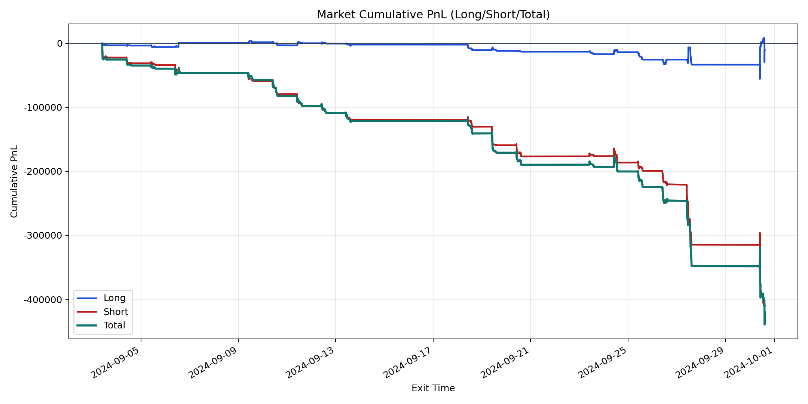
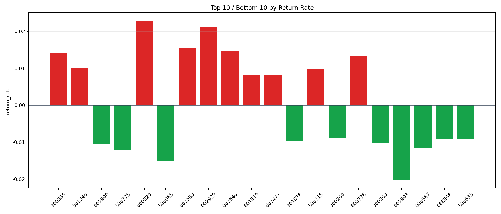

| repo_root | /home/haoranyou/data/output/dynamic_AUM_TAKER_index1000 |
|---|---|
| period_months | 1 |
| period_label | 2024-09-03_to_2024-09-30 |
| start_time | 2024-09-03 09:48:09 |
| end_time | 2024-09-30 14:42:12 |
| n_trades | 14936 |
| n_symbols | 404 |
| total_pnl | -420556.2574500017 |
| long_total_pnl | -10015.861249998723 |
| short_total_pnl | -410540.396200003 |
| total_entry_notional | 262027870.0 |
| long_entry_notional | 73936130.0 |
| short_entry_notional | 188091739.99999997 |
| total_return_rate | -0.0016050058241896242 |
| long_return_rate | -0.00013546639849825414 |
| short_return_rate | -0.002182660419856837 |
| top_symbols_by_return | ["000029", "002929", "002583", "002646", "300855", "600776", "301348", "300115", "601519", "603477"] |
| bottom_symbols_by_return | ["002993", "300065", "300775", "000567", "002990", "300363", "301078", "300633", "688568", "300260"] |

